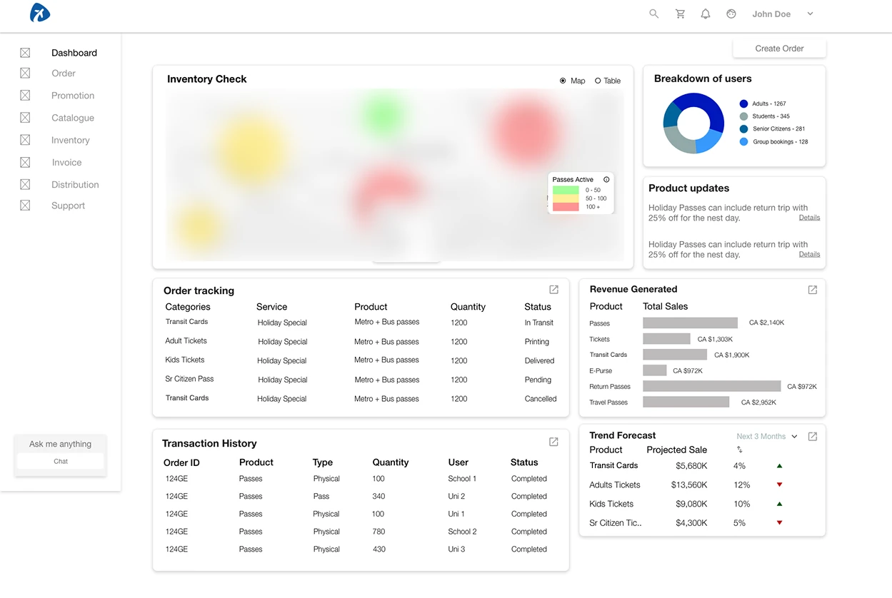
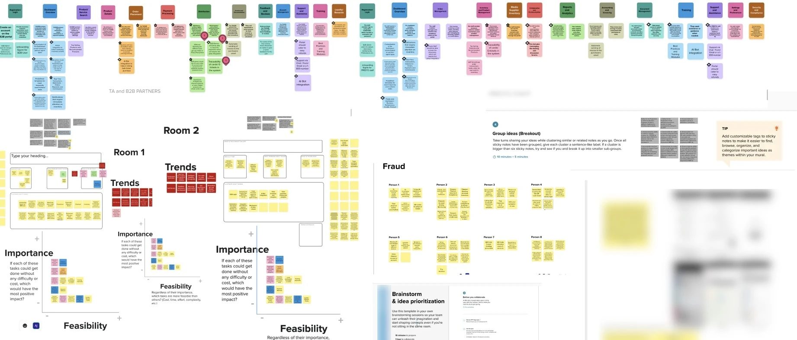
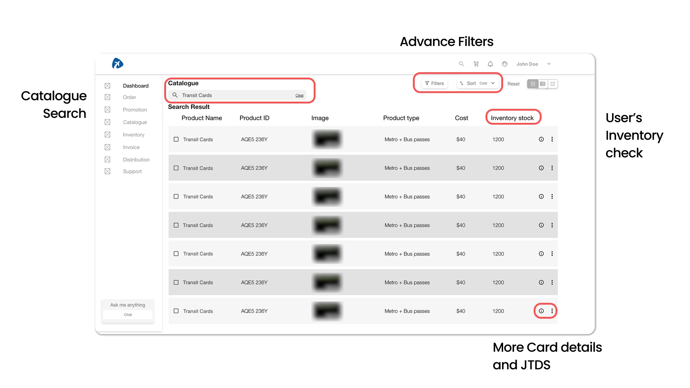
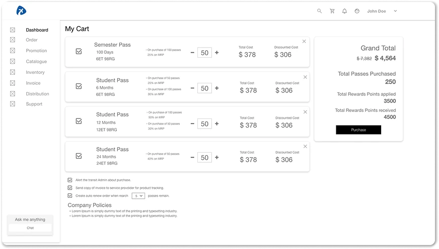
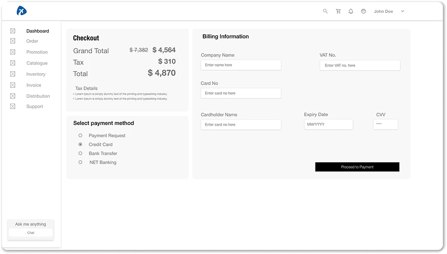
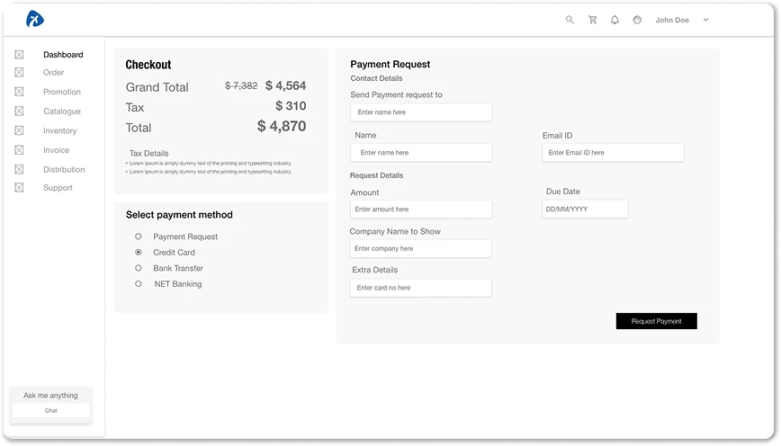
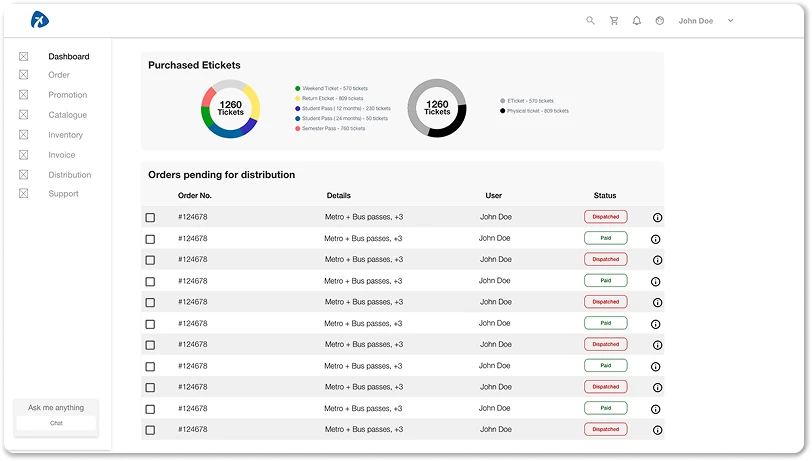
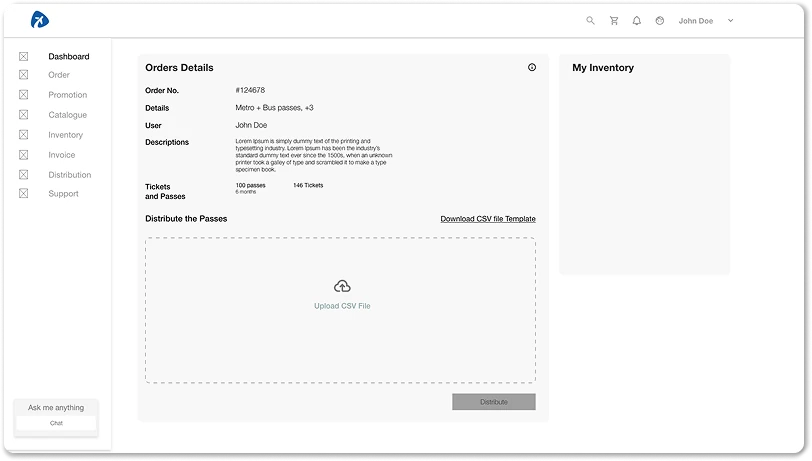
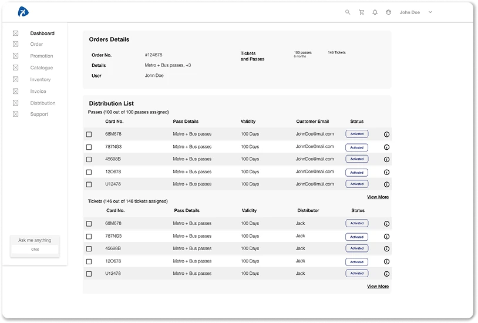

B2B · Public transit
Bulk purchasing and distribution of travel passes for a public transit network.
- Problem
- A fare system built for individual commuters had no way to serve organisations that buy passes in bulk.
- My role
- Owned the B2B track, from the research workshops to the final UI.
- Result
- Three platform pillars (overview dashboard, ready-made and customisable passes, fraud-aware distribution) designed into a B2B platform. It was still in development when my engagement ended.

One fare system, two very different bulk buyers.
A university's finance office might need, say, a batch of travel passes for an incoming class, each with a discount and an expiry date. A kiosk at a tourist stop might need to sell a single pass in seconds. The fare system behind millions of individual commuters' journeys had no path for either.
The wider programme also covered the consumer app. I owned the B2B track, and I wasn't there for launch: the platform was still in development when my engagement ended.
Needs that pull in different directions.
Universities, kiosks and tourist retailers were buying passes in bulk through processes never designed for that volume. A university wants fine control over discounts, cohort rules and expiry. A kiosk wants ready-made products and a fast checkout. One catalogue had to serve both.
Student passes also had to be distributable without becoming either a fraud risk or a way to watch students.
The agency's public-sector status added another constraint: a formal WCAG accessibility requirement that applied to every component choice from the start.
How the research became decisions.
We ran three remote workshops with travellers, retailers, client stakeholders and the product and design teams. I co-facilitated them, and the design team did the synthesis together. The sessions included structured brainstorming, idea prioritisation and fraud-scenario exercises.
We grouped the outputs into themes with affinity clustering, then mapped them by importance and feasibility with participants in the room. The product team agreed the final themes with us. Three priorities came out of it and became the platform's pillars.

-
1
Overview dashboard
Activity and order status across the account, in one place.
-
2
Ready-made and customisable passes
A catalogue with ready-made passes for speed and customisable ones for control.
-
3
Fraud-aware, private distribution
Transparent distribution of student passes that respects their privacy.
Turning the pillars into a B2B platform.
That was my part of the work. Other designers owned the consumer app and the other tracks.
I made two decisions before designing any screens. First, I reused the client's existing design language. That kept the B2B platform consistent with the consumer system, sped up development and testing, and gave us a head start on accessibility, because the component library already had compliance work behind it. Second, wherever more than one interaction pattern could solve a problem, I chose the accessible one.
Catalogue and search
Ready-made and customisable pass products, with advanced filters and inventory checks. A kiosk can sell quickly, and a university keeps its discount and cohort control.

Bulk payment
The catalogue's checkout, built for organisational order sizes, so an organisation can buy many passes in one order instead of one at a time.



Distribution and status tracking
The organisation issues passes to recipients and follows each one's status, without having to ask anyone.



Overview dashboard
Activity and order status across the account, in one place: what's pending, delivered or flagged.
Transparency for the organisation, not surveillance of students.
Discounted student passes invite misuse, such as passes resold or handed to people who don't qualify. The blunt answer is to track every pass's use. It's the strongest fraud control and the simplest to specify. It also turns a travel pass into a tool for watching students, which a university would have good reason to refuse.
I designed for transparency at the organisation level instead, using three measures:
- verification when each pass is issued
- a status and audit trail showing where every issued pass stands
- limits on how student passes can move after issue
Together they make misuse detectable without monitoring anyone's travel. The cost is precision. Checks at issue and visible patterns catch some misuse later than constant monitoring would, and some not at all. I based these measures on the workshop fraud scenarios, because we had no real incident data.
How we validated it.
Travellers and retailers took part in the discovery workshops, and I reviewed the designs with client stakeholders throughout the workshop cycle. That's more direct access than my banking case study had, where all research went through stakeholders.
Even so, the people who validated the work aren't all the people who will use it. No university administrator or front-line kiosk staff member was observed completing a task. That's a gap in who tested the design, and it matters as much as any untested flow.
By the numbers, and what I'd do differently.
What I'd do differently
I'd run task-based usability testing of the distribution flow with university administrators and kiosk staff. It's the riskiest and newest part of the design, and the people who will use it every day never tested it.
I'd also check the fraud measures against real incident data after the platform's first quarter live.